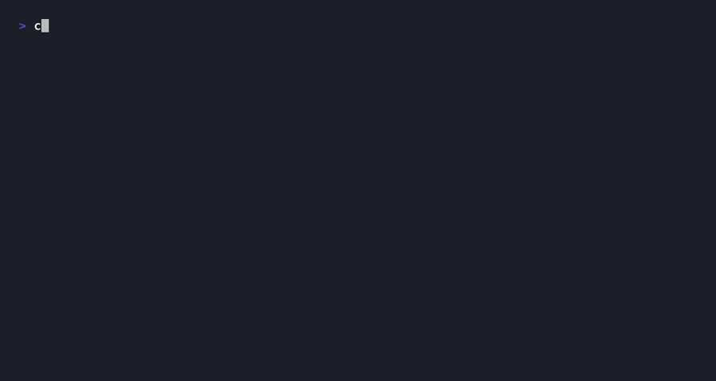
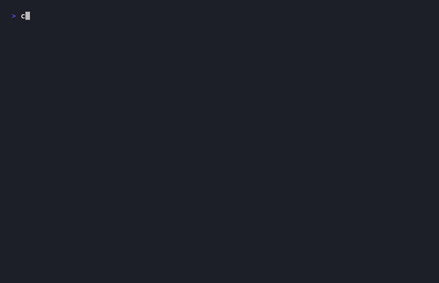

return 금지 검사replMode)ReturnException 제어 흐름recoverToNextStatementDiagnosticMessage 상수 관리오류 흐름: 공유 diagnostics 리스트 → 단계 완료 후 비어있지 않으면 즉시 failure() → RunResult(success=false)


@DisplayName 한글로 분리
@Test void 정수형숫자출력() { ... }
@DisplayName("정수형 숫자 출력") @Test void printsIntegralNumberWithoutDecimalPoint() { run(print(lit(42.0))); verify(output).print("42"); }
테스트 먼저 작성
구현 없이 실패 확인
테스트 통과하는
최소 구현 작성
동작 보존하며
코드 품질 개선
4f0d97d Checker.check() 에러 없음 검증
🟢 GREEN
303831f errors 중복 초기화 제거
🔵 REFACTOR
3447ed2 GREEN 완료
🟢 GREEN
e1352c5 REFACTOR 완료
🔵 REFACTOR
c917d33 통합 시나리오 — RED 없이 직행
🟢 GREEN
b5da3f7 GREEN 완료
🟢 GREEN
fe83dac REFACTOR 완료
🔵 REFACTOR
414bce9 REFACTOR 완료 · 순수 정리
🔵 REFACTOR
Checker.java
visitBlockStmt(BlockStmt stmt) { scopes.push(new HashSet<>()); // ① 중복 stmt.statements.forEach(s -> s.accept(this)); scopes.pop(); } visitForStmt(ForStmt stmt) { scopes.push(new HashSet<>()); // ② 중복 stmt.body.forEach(s -> s.accept(this)); scopes.pop(); }
private void withNewScope(Runnable body) { scopes.push(new HashSet<>()); // 한 곳에서만 관리 body.run(); scopes.pop(); } visitBlockStmt(BlockStmt stmt) { withNewScope(() -> stmt.statements.forEach(s -> s.accept(this))); } visitForStmt(ForStmt stmt) { withNewScope(() -> stmt.body.forEach(s -> s.accept(this))); }
@DisplayName("for 루프 - 변수 누설 방지") @Test void forLoopVariableDoesNotLeak() { RunResult r = run( "for (var j=0; j<1; j=j+1)" + " { print j; }\nprint j;"); assertFalse(r.success()); assertTrue(r.diagnostics().stream() .anyMatch(d -> d.message.contains( "Undefined variable 'j'."))); }
@DisplayName("0으로 나누기") @Test void divisionByZero() { // 상수 폴딩은 0 나눗셈 시 폴딩 생략 // → 런타임에 위임 assertFailsAtStage( "print 3 / 0;", Diagnostic.Stage.RUNTIME, "Division by zero."); }
@DisplayName("재귀 함수가 동작한다") @Test void recursiveFunctionWorks() { String src = """ Func fact(n) { if (n <= 1) { return 1; } return n * fact(n - 1); } print fact(5);"""; assertEquals(List.of("120"), out(src)); }
accept()만 정의. 연산 로직은 각 Visitor가 담당 — AST 수정 없이 새 단계 추가 가능.CodeFab이 파이프라인을 캡슐화. REPL은 하나의 CodeFabSession을 재사용해 상태 유지.추가: ReturnException — return 구문을 예외로 스택 풀기. catch는 visitCall에서만. package-private으로 외부 노출 방지.
System.out 직접 사용 안 함. 주입된 OutputSink로만 출력 — 테스트에서 CollectingOutputSink로 교체.enclosing 참조로 부모 스코프 체인. Checker의 distance 기록 → getAt()으로 O(1) 정적 바인딩.return new Expr.Literal(left.value + right.value); 로 수정 완료 — visitBinary N회 → 0회 ✅InterpreterRuntimeError로 위임하세요.if (right.value == 0) return null; — 진단 발생 없이 런타임 위임 ✅SpyExecutor로 visitBinary 호출 횟수를 카운트해서 검증하면 최적화 효과를 정량적으로 증명할 수 있어요. TDD 원칙에 딱 맞네요!assertThat(spy.visitBinaryCount).isEqualTo(0); 추가 완료 — SpyEnvironment로 O(1) 바인딩도 함께 검증 ✅depth를 AST 노드에 기록해두면, Executor는 getAt(depth, name)으로 체인 탐색 없이 O(1) 직접 접근할 수 있습니다.get() 호출 0번 확인 — 모든 변수 조회가 getAt()으로 전환됨 ✅diagnostics와 scopes가 인접해서 가독성이 향상될 것 같아요~!@DisplayName이 없어요. 팀 컨벤션에 맞게 추가해 주세요~watch만 입력하면 빈 인자 가드가 없어서 ArrayIndexOutOfBoundsException이 발생합니다watchWithNoArg 추가throw가 없으면 진단만 기록되고 파싱이 계속됩니다. 잘못된 AST 노드가 생성될 수 있어요!throw reportError(token, msg); 로 수정했습니다 — recoverToNextStatement() 정상 동작 ✅return null로 폴딩만 생략하고 런타임에 위임해야 해요.return null; — InterpreterRuntimeError는 Executor에서 처리 ✅codefab.executor 내부에서만 catch해야 합니다. public으로 노출되면 외부 패키지에서 남용될 수 있어요.class ReturnException (package-private)으로 변경 — 외부 catch 차단 완료 ✅replMode 플래그로 전역 미선언 검사를 분기해야 해요.replMode=true 시 전역 스코프 미선언 검사 생략 → Executor에 위임 ✅숫자 0, 빈 문자열도 truthy — 오직 nil/false만 falsy
미초기화 변수 및 void 함수 반환값은 nil 출력
정수값 Double은 .0 제거 후 출력 (stringify 규칙)
고정 크기, null로 초기화. 범위 초과 시 런타임 오류
클로저 지원 · 재귀 가능 · 호출 깊이 500 제한
Java 구조적 동등성 누출 방지를 위한 의도적 설계
CodeFab Interpreter — 팀 프로젝트 발표
전체 145개 테스트 통과 · 실패 0
Literal(Number)이면 컴파일 타임에 계산해서Literal(7)로 치환할 수 있어요! Executor의visitBinary호출을 완전히 제거할 수 있습니다~